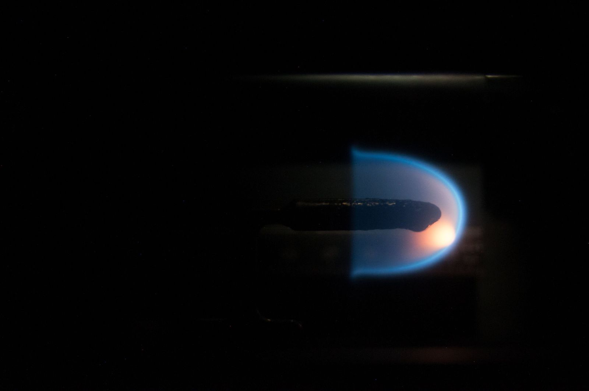
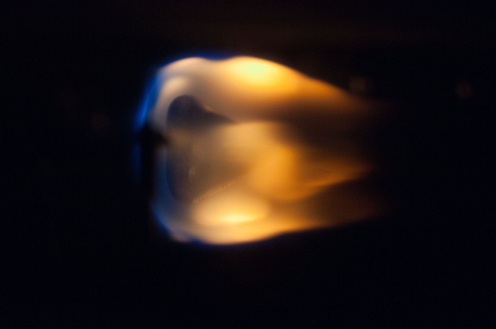
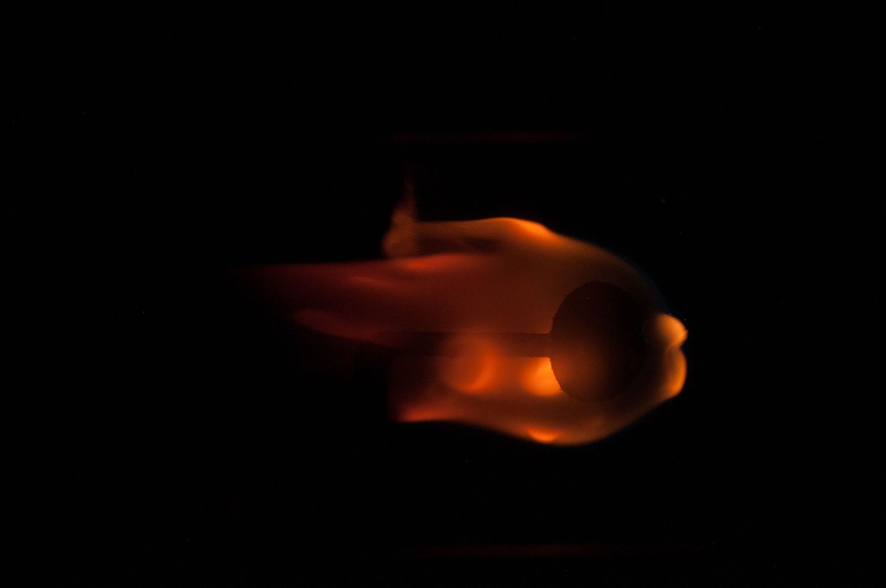
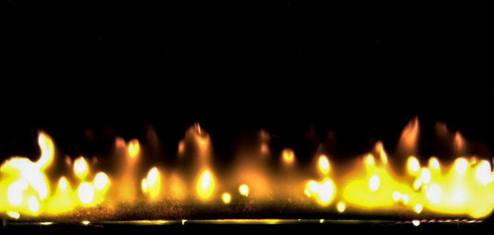
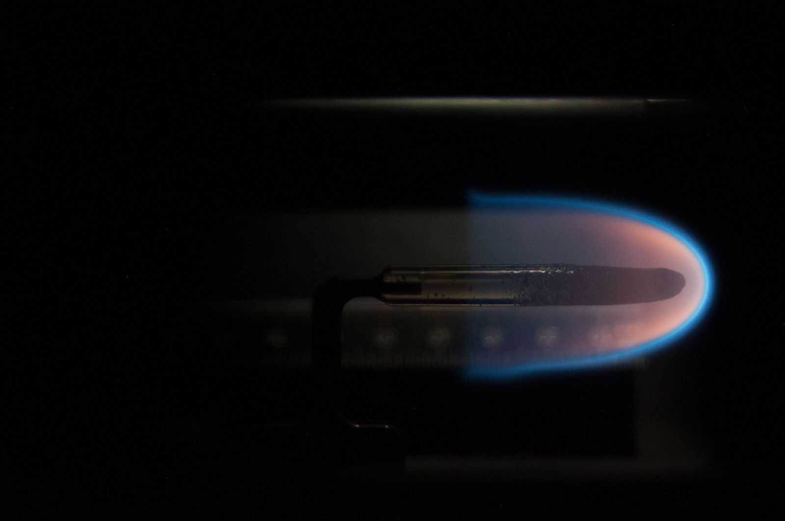

“Out” is not out
Confirm a fire is over with temperature and gas sensors, not by sight. Cool flames kept fuel burning 2.6× longer than the visible flame.
Evidence: PSI-117 burn history
On the International Space Station, NASA has lit hundreds of fires on purpose. We turned the published results into one story: how flames hide, return and poison the air without gravity, and what crews on the Moon and Mars should do about it.
On Earth, hot gas rises and pulls fresh air in from below, stretching the flame into a tall, bright teardrop. In orbit nothing rises. Oxygen reaches the flame only by slow diffusion, so it becomes a dim, round, often blue ball.
BASS and BASS-II burned real wax candles on the ISS (PSI-25, PSI-26). Illustration, not to scale.
A 4 mm drop of dodecane, ignited on the space station. Sizes and timing come straight from the measured data, sped up 4×. Turn on the infrared view to see what a crew member could not.
Explore the physical structure of microgravity fire in full 3D. Rotate, zoom, and inspect the spherical hot reaction zone, the invisible cool flame outer envelope, and how spacecraft ventilation accelerates toxic spread.
Illustrative model inspired by NASA PSI-117 droplet flames and Saffire-1 airflow results, not a measured reconstruction. Drag to orbit in 3D.
Without gravity, hot gas does not rise, so a burning droplet wraps itself in a perfect sphere of flame. Watch what happens at about 13 seconds.
n-dodecane, 4 mm initial diameter, air at 1 atm. Source: MST 2024 analysis of ISS data (PSI-117).

The bright hot flame collapses at 12.6 s. To a crew member it would look extinguished.
But the droplet keeps shrinking at the same pace for another 33 s. It is still burning, inside a cool flame: a faint, low-temperature flame the eye cannot see.
The fuel kept reacting for 2.6× longer than the visible fire lasted.
For every droplet, scientists recorded the size it had shrunk to when each flame went out. Pick a fuel.
Dots: ISS experiments. Dashed lines: models. Air at 1 atm. Source: Proceedings of the Combustion Institute 2023 (PSI-117).

The hot flame gives up early, while most of the droplet is still left: its points sit near the top of the chart.
The cool flame keeps going until the droplet is about 1 mm or less. Seeing the flame die is not proof that the fuel has stopped burning.
The same droplet, simulated in two atmospheres. At 21% oxygen the cool flame burns steadily. At 10% oxygen it starts to beat like a heart.
Peak gas temperature around the droplet (simulation). The brief hot ignition spike near 1,150 K at the start is off the top of the chart. Source: PROCI 2019 (PSI-117).
At 10% oxygen the cool flame flares up 6 times in under a second, dimming and recovering each time.
A fire that seems to be dying can keep coming back. Detectors should watch temperature over time, not a single reading.
Future Moon and Mars habitats may not keep Earth’s sea-level pressure. These ISS runs tested how pressure reshapes a flame.
Higher pressure makes droplets burn faster and, at 5 atm, radiate more heat.
Cool flames react strongly: at 0.5 atm they died while the droplet was still about 2 mm across, at 1 atm they survived until it was about 0.5 mm or smaller, and at 3 atm none were seen at all.
Fire rules learned at one pressure do not carry over to another. Test materials at the habitat’s real pressure.
In this run the flame went through three stages. The measured heat tells the story.
Time converted from the paper’s scaled time (t ÷ d₀²) using d₀ = 4.5 mm. Source: PROCI 2019 (PSI-117).

Stage 1: a hot flame burns, then dies at about 8 s.
Stage 2: a cool flame quietly keeps the droplet burning.
Stage 3: at about 26 s the heat output jumps to its highest value of the whole test, 62.8 W. The hot flame has come back on its own.
After leaving the ISS, Cygnus cargo ships became flying fire labs. Large fabric and plastic samples were burned inside, far from any crew.

Saffire-1: two 40.6 × 94 cm cotton-fiberglass (SIBAL) sheets, airflow 20 cm/s, about 21.5% oxygen.
When the airflow pushed the flame forward over unburned fabric, the fire lasted 7 minutes. When it blew against the flame, it lasted just over 1 minute.
Ventilation can feed a fire. BASS-II on the ISS saw the other side: 15 of its test logs record the flame going out as the airflow was turned down.
Nine 5 × 29 cm samples, airflow 20 cm/s, about 22% oxygen, compared with the same test on Earth.
BASS-II recorded the carbon monoxide inside its sealed test box before and after each burn. The rise shows how much toxic gas each material released.
Each dot is one test: CO after the burn minus CO before, in ppm, inside the experiment box (not the station cabin). Boxes show the middle half of tests. Source: BASS-II experiment table (PSI-25).

Thick plastic sheets raised CO by a median 335 ppm per test, about 21× the thin film of the same plastic.
Nomex released almost none. Thick plastics burn slowly and stay alight longer (Saffire-2 saw one burn for 15 minutes), so they keep producing gas.
A small, steady flame can be more dangerous to a crew than a big, short one.
NASA PSI tested 0g in orbit, but what happens under 0.166g on the Moon or 0.38g on Mars? Using dimensionless fluid mechanics (Grashof Gr & Richardson Ri scaling), this engine predicts flame morphology, burning rate, and toxic surge for planetary exploration habitats.
On the Moon, buoyancy is weak but non-zero. Flames form an unstable, wobbling transitional envelope, prolonging solid smoldering and generating severe carbon monoxide.
Illustrative estimate from standard dimensionless scaling (Gr = g·β·ΔT·L³/ν², Ri = Gr/Re²). Not measured: NASA PSI data covers orbit (0g) and Earth, not the Moon or Mars.
Every recommendation below points to the experiment that supports it.
Confirm a fire is over with temperature and gas sensors, not by sight. Cool flames kept fuel burning 2.6× longer than the visible flame.
Keep monitoring after extinction. One droplet re-ignited into its hottest flame 18 s after the first flame died.
Shut down ventilation fans at the first sign of fire. Airflow along a flame made a fabric fire last 6× longer.
Prefer Nomex-type fabrics and flame-resistant silicones near crew areas. Nomex did not ignite even next to burning plastic.
Carry CO sensors and masks ready to use. Thick plastics released about 21× more carbon monoxide than thin film.
Qualify materials at the habitat’s real pressure, oxygen and airflow. Silicone burned on Earth but not in orbit, and cool flames changed with pressure.
Standard smoke detectors and optical cameras go blind during the cool flame stage because invisible flames produce near-zero soot and no visible light. Our sensor fusion algorithm cross-validates narrow-band mid-IR thermal flux with CO/CO₂ ratios to detect invisible combustion before fatal re-ignition.
Camera and smoke sensors report zero flame, but thermal radiometer and electrochemical gas sensor confirm persistent low-temperature combustion. Do NOT open ventilation.
Concept: combining thermal and CO/CO₂ readings could catch invisible cool flames that cameras miss. Simulated, not flight-tested.
Everything above, turned into one card a crew can follow in the first minutes of a fire. Each step shows the NASA measurement behind it.
A rule of thumb built from PSI-117, Saffire-1, Saffire-2 and BASS-II results. It is not an official NASA procedure.
Pick a material and cabin conditions. The verdict is built only from what these experiments measured, and says where the data runs out.
A rule of thumb from PSI-117, Saffire and BASS-II results, not an engineering certification.
A random-forest model trained on the BASS-II experiments. Pick a material, its thickness and the oxygen level: it predicts the chance that the fire raises carbon monoxide by more than 100 ppm inside the test chamber, and shows the real ISS fires behind the answer.
Model: 60 decision trees (scikit-learn), inputs material, thickness and oxygen. Checked with 5-fold cross-validation repeated 10 times on tests it never saw. It predicts conditions inside the small BASS-II chamber, not a spacecraft cabin.
Test your command decisions against real spaceflight hazards. A fire breaks out inside an Artemis Lunar Gateway Habitat module. Every decision is explained with results from NASA PSI-117, Saffire-1 and BASS-II.
Each step is based on NASA PSI-117 (cool flames & re-ignition) and Saffire-1 (airflow) results. A training game, not an official procedure.
Ask anything about fire in space. The site first retrieves the NASA facts that match your question (a BM25 search over 13 sourced facts, in English and Arabic), then Gemini answers only from those facts, cites every claim, and says so when the data does not cover your question.
From data analytics to spaceflight software: how Flame in Freefall could grow from today's prototype into flight software. Stages 3 and 4 are future plans.
Analysis of 129 BASS-II tests and PSI-117 extinction data. Identification of invisible cool flame hazard.
87% accuracy ML Random Forest model, BM25-Gemini RAG assistant, and real-time 3D Digital Twin simulation.
Packaging Sensor Fusion and Early Warning algorithms into a NASA core Flight System (cFS) compliant C payload.
Integration into Lunar Gateway ECLSS avionics bus with autonomous ventilation cutoff and localized water-mist suppression.
Future idea: package the early-warning logic as an app for NASA’s open-source cFS flight software framework, reading cabin sensors and triggering ventilation cutoff. This is a plan; it has not been built or tested.
All data comes from NASA’s Physical Sciences Informatics (PSI) repository. A Python script cleans the raw files and builds every chart on this page.
In microgravity, fire defies human intuition. Watch flames turn into spherical balls, hide invisibly, and reignite without a spark.